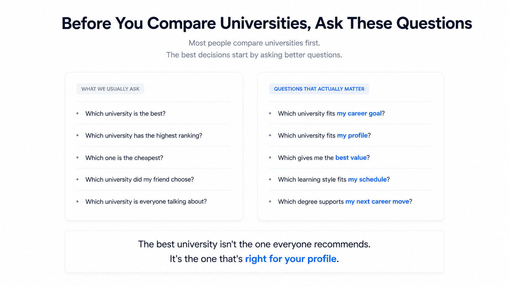
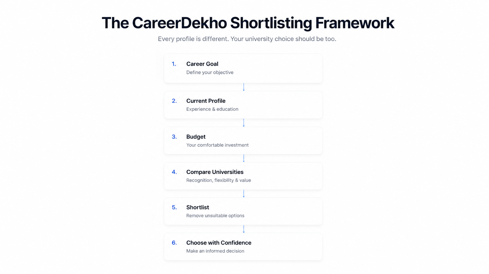
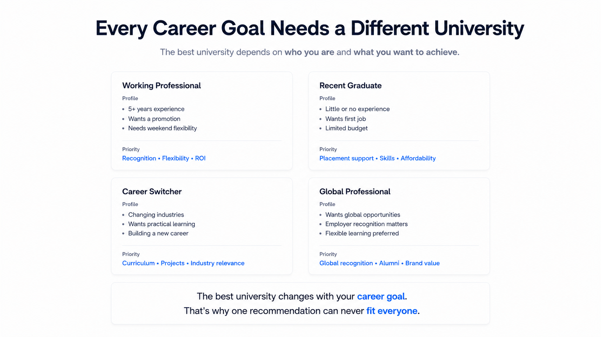
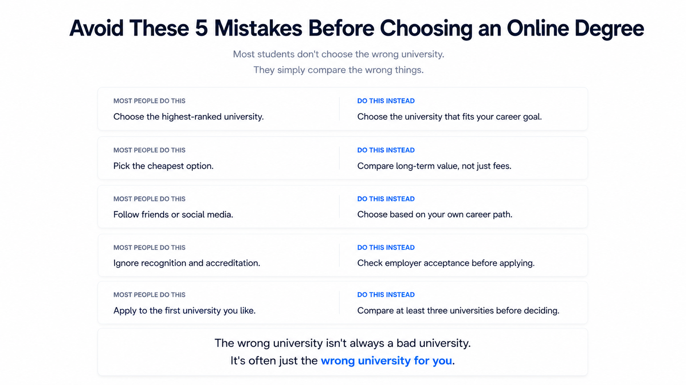
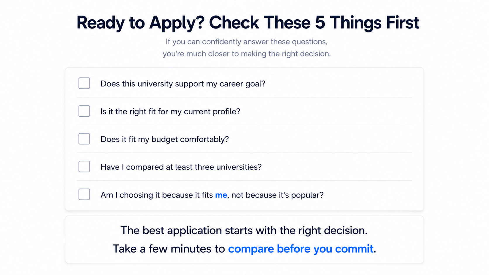

Which Is the Best Online University?
If you've searched for an online degree recently, chances are you've asked yourself this exact question.
Or perhaps you've searched for the best Online MBA in India, compared NMIMS with Online Manipal, checked whether Amity is worth it, or tried to find which online university offers the best placements.
You open one article. Then another. Every website recommends a different university. Every YouTube video has a different ranking. Every counsellor seems to have a different opinion.
Before you know it, you've spent hours researching—but you're more confused than when you started.
You're asking the wrong question.
The best university does not exist in isolation. The best university for your profile does.
The right choice for a software engineer looking for a promotion may not suit an HR professional planning a career switch. A working parent needing maximum flexibility may have very different priorities from a recent graduate seeking stronger career support.
The “best” university changes depending on the person choosing it.
Not Sure Where to Start?
Tell us about your profile, and we'll help you shortlist universities that match your career goal and budget.
Shortlist the Right Universities for My ProfileWhatsApp opens with a simple profile template you can complete.
Why Most People Choose the Wrong University
Most people do not choose the wrong university because they are careless. In fact, they often do a great deal of research.
The problem is that they begin by researching rankings, fees, advertisements, YouTube opinions, social media discussions and recommendations from friends—before deciding what they actually need from the degree.
There is nothing wrong with checking any of these. The mistake is believing they can make the decision for you.
Imagine Rahul is a software engineer with four years of experience and wants a promotion in his current company. Priya works in HR and wants to switch into Product Management. Both have similar budgets and are considering the same universities.
Should they make the same choice? Probably not. They may be comparing the same universities, but they are trying to solve completely different career problems.

A university is not the goal. Your career goal is. The university is one of the tools that may help you get there.
Advice from a friend, colleague or creator may be completely genuine. It may simply be based on their profile rather than yours.
So instead of asking, “Which university is the best?”, begin with: “What do I need from my next degree?”
How to Choose the Right Online University
Think of choosing an online university like choosing a home. You would not begin by asking for the best house in the entire city. You would first define your budget, location, family needs, commute and future plans.
Choosing a university works the same way. Once your requirements are clear, the right options become easier to identify.

The 7 Questions to Answer Before Comparing Universities
1. Why Do You Want Another Degree?
Are you looking for a promotion, a career switch, better salary opportunities, leadership roles, a recognised qualification, further studies or personal learning?
Your answer changes the criteria you should prioritise. Someone seeking a promotion may value brand recognition differently from someone making a career switch, who may care more about specialisation, practical learning and industry relevance.
2. Where Are You Today?
Consider your highest qualification, work experience, current role, industry and whether you plan to stay in the same field or move into another one.
A recent graduate and a professional with eight years of experience may both pursue an Online MBA—but their needs, expectations and suitable options can be very different.
3. What Is Your Comfortable Budget?
Some people assume the most expensive university must be the best. Others simply choose the cheapest option. Neither approach guarantees a good decision.
Ask how much you are comfortable investing if the program genuinely helps you move towards your goal. Focus on value, not price alone.
Need Options Within Your Budget?
Share your budget, qualification, experience and goal. We'll help you narrow down suitable options.
Find Universities Within My Budget4. How Important Is University Brand?
Brand can matter, but not equally for everyone. Its importance depends on your industry, experience, career goal and what you expect from the qualification.
Do not ask only which university has the biggest name. Ask how much brand should matter for your situation.
5. Does the Learning Format Fit Your Life?
Can you attend live classes? Do you need recordings? Do you work shifts, travel frequently or manage family responsibilities?
A degree creates value only when you can realistically remain consistent and complete it. Choose a format that fits your life rather than forcing your life to fit the program.
6. What Return Are You Expecting?
Your return may be a promotion, higher salary, career switch, stronger knowledge, eligibility for future opportunities or a recognised academic qualification.
Be specific. If you do not define success before enrolling, it becomes difficult to judge whether the investment was worthwhile later.
7. Now Compare Universities
Only after answering the first six questions should you compare recognition, curriculum, learning format, examinations, learner support, fees, alumni network and career relevance.
Finish with one final question: “Does this university help me achieve the goal I defined at the beginning?”
The university should fit your career plan—not the other way around.
The Right University Looks Different for Different People
Different priorities can lead to different—and equally sensible—choices.

I Want a Promotion
A working professional may prioritise employer recognition, a relevant management curriculum and enough flexibility to continue working.
I Want to Switch Careers
A career switcher may prioritise specialisation, projects, practical learning and industry relevance alongside the degree.
I Need Maximum Flexibility
A professional with limited time may care most about recordings, realistic schedules, examination format and learner support.
I Have a Limited Budget
The goal should be the best value within the available budget—not automatically the cheapest option.
Mistakes to Avoid Before Choosing an Online Degree
Even serious applicants often repeat the same avoidable mistakes—not because they do not care, but because nobody points them out before they apply.

1. Starting with Rankings Instead of Goals
Without a clear destination, every university begins to look attractive.
2. Following Someone Else's Journey
Recommendations can be helpful, but they are based on another person's experience, budget and goals.
3. Confusing Price with Value
Higher fees do not automatically guarantee better outcomes, and the cheapest option may leave out things that matter to you.
4. Skipping Recognition and Eligibility Checks
Recognition should never be assumed. The relevant university, program and academic intake should be checked before payment.
5. Letting Deadlines Make the Decision
Admission deadlines may be real, but panic should not choose a university for you.
6. Treating Rankings as the Final Answer
Rankings can guide research, but they cannot understand your career, schedule or budget.
7. Making the Final Decision Without a Second Opinion
A second opinion does not mean someone else should decide for you. It may simply help you notice something you overlooked.
Confused Between Two Universities?
Share the two options and your profile. We'll help you compare them using the factors that matter for your goal.
Help Me Compare My OptionsBefore You Apply
Before paying any university, take a few minutes to review your decision calmly.

So, Which Online University Should You Choose?
If you have read this far hoping for one university name, the honest answer is that nobody can responsibly recommend one without first understanding you.
If someone asked, “Which is the best car in India?”, you would first ask about budget, family size, daily use, mileage and space. Choosing an online university works in the same way.
Good counsellors do not start with universities. They start with people.
The same university can be an excellent choice for one learner and the wrong choice for another. The recommendation should come after understanding the person—not before.
Still Not Sure Which University Is the Right Fit for You?
Get a personalised university shortlist based on your career goal, current profile, work experience, budget and preferred program.
Shortlist the Right Universities for My ProfileQuestions We Often Get Asked
Which online university is best in India?
There is no single online university that is best for every learner. The right choice depends on your career goal, profile, budget, flexibility, recognition needs and expected value.
How do I choose the right online university?
Define your career goal, current profile and budget first. Then compare suitable universities on recognition, curriculum, learning format, learner support, fees and career relevance.
Does university brand matter for an online degree?
It can matter, but not equally for everyone. Consider brand alongside curriculum, recognition, flexibility, learner support and the value it adds to your specific career goal.
What should I compare before choosing an online university?
Compare recognition, eligibility, curriculum, learning format, examinations, flexibility, learner support, total fees and how well the program supports your career goal.
Is the cheapest online university a good choice?
Not automatically. A lower fee can be good value, but only when the program still meets your academic, career and flexibility requirements.
How can I check whether an online degree is recognised?
Verify the latest official information for the university, specific online program and academic intake you are considering before paying fees.
CareerDekho | Choose with Confidence.